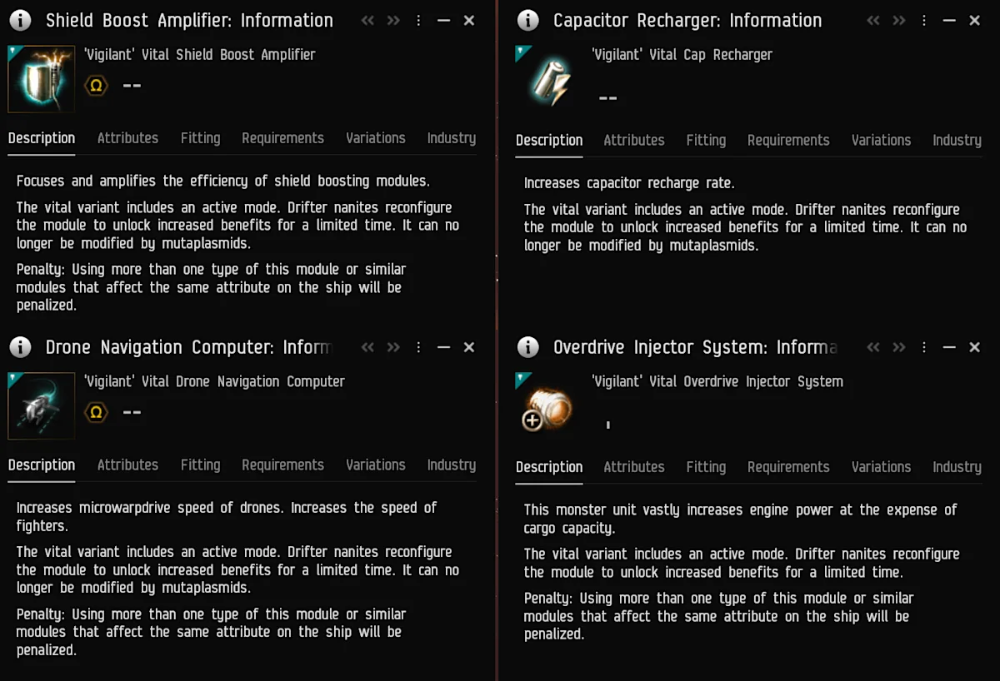

Every active mode lasts 20 seconds and has a 2-minute cooldown. Passive effects are weaker than Tech I.
What are Aberrant modules?
Rare meta modules from Drifter and Rogue Drone cache sites.
Aberrant modules are modified versions of existing passive modules. Each keeps a passive effect, then adds an active mode that Drifter nanites reconfigure for a short, powerful burst.
The trade-off is deliberate: the passive bonus is weaker than the equivalent Tech I module, while the active effect is much stronger. Every active mode lasts 20 seconds and has a 2-minute cooldown.
Weaker passive
The always-on bonus sits below the equivalent Tech I module. You fit it for the active mode, not the passive.
Stronger active
Activating the module gives a much larger effect for a short window — 20 seconds.
2-minute cooldown
One burst every two minutes. Time the window around the fight, not the other way round.
No mutaplasmids
The Vital variant cannot be modified by mutaplasmids. Using more than one type, or similar modules affecting the same attribute, is penalized.
All four are 'Vigilant Vital' variants. They include an active mode and cannot be modified by mutaplasmids. The stacking penalty applies to multiple types or similar modules affecting the same attribute.
The four modules
Passive and active effects, plus the cache site for each module.
Collapsed Drifter CacheCommunications section
Vigilant 'Vital' Overdrive Injector System
Passive: 8% speed boost
Active: 15% speed boost
Duration: 20 seconds
Cooldown: 2 minutes
Burst: 15% speed for 20s — use it to reposition, travel or escape.
Trade-off — passive speed is weaker than the Tech I Overdrive Injector System.
Rare drop · Communications section
Collapsed Drifter CacheLogistics section
Vigilant 'Vital' Shield Boost Amplifier
Passive: 24% shield booster bonus
Active: 43.2% shield booster bonus
Duration: 20 seconds
Cooldown: 2 minutes
Burst: 43.2% shield booster bonus for 20s — pair it with a shield booster for a burst tank.
Trade-off — passive bonus is weaker than the Tech I Shield Boost Amplifier.
Rare drop · Logistics section
Fabricated Rogue CacheSite drop
Vigilant 'Vital' Drone Navigation Computer
Passive: 20% drone & fighter speed
Active: 36% drone & fighter speed
Duration: 20 seconds
Cooldown: 2 minutes
Burst: 36% drone and fighter speed for 20s — helps drones close, kite or catch a target.
Trade-off — passive bonus is weaker than the Tech I Drone Navigation Computer.
Rare drop · Fabricated Rogue Cache
Collapsed Drifter CacheEngineering section
Vigilant 'Vital' Cap Recharger
Passive: 12% capacitor recharge bonus
Active: 25% capacitor recharge bonus
Duration: 20 seconds
Cooldown: 2 minutes
Burst: 25% capacitor recharge for 20s — a burst of cap recovery when the fight is tight.
Trade-off — passive bonus is weaker than the Tech I Cap Recharger.
Rare drop · Engineering section
Module
Source
Passive
Active
Window
Overdrive Injector SystemVigilant 'Vital'
Communications · Collapsed Drifter Cache
8% speed
15% speed
20s / 2m cooldown
Shield Boost AmplifierVigilant 'Vital'
Logistics · Collapsed Drifter Cache
24% shield booster bonus
43.2% shield booster bonus
20s / 2m cooldown
Drone Navigation ComputerVigilant 'Vital'
Fabricated Rogue Cache
20% drone & fighter speed
36% drone & fighter speed
20s / 2m cooldown
Cap RechargerVigilant 'Vital'
Engineering · Collapsed Drifter Cache
12% capacitor recharge
25% capacitor recharge
20s / 2m cooldown
All four are rare cache drops. No blueprint source has been announced.

The four module information windows from the expansion notes. Image: CCP Games / Fenris Creations. Click to enlarge.
Where to farm them
Rare drops from Drifter and Rogue Drone cache sites, with the best chance in low-class wormholes.
Collapsed Drifter Cache
Three sections: Engineering, Logistics and Communications. You can only restore power to one of them per site.
Fabricated Rogue Cache
The listed source of the Drone Navigation Computer. Check the cache containers after hacking.
Omega Logging & Rogue Stockpile
The highest chance for Aberrant modules. These containers are found exclusively in C1–C3 wormhole space.
Scan and hack
Both cache sites are exploration content. Scan them down, hack the cans and check every container.
Site / section
Module
Collapsed Drifter Cache — CommunicationsChoose this section
Overdrive Injector System
Collapsed Drifter Cache — LogisticsChoose this section
Shield Boost Amplifier
Collapsed Drifter Cache — EngineeringChoose this section
Cap Recharger
Fabricated Rogue CacheNo section specified
Drone Navigation Computer
The Drifter cache lets you power only one of its three sections. Match the section to the module you want before committing.
Highest drop chance: Omega Logging and Rogue Stockpile containers in Class 1–3 wormhole space. Every cache site has a rare chance, but these containers are the best target.
Other cache loot
Aberrant modules are not the only reason to open these containers.
Penumbral Shadows SKINs
Cosmetic SKINs are also on the possible loot table for these cache sites.
Rig-drawback hardwirings
New hardwirings that reduce rig drawbacks are listed as possible drops. CCP has not published the full stats yet.
And more
The notes say there are additional possible drops. Check each container rather than assuming the first can is the only one.
How to use them
These are burst modules. Plan the 20-second window around the moment it matters.
Overdrive
Burst speed for travel, repositioning or escaping a bad fight. The passive alone is weaker than Tech I.
Shield Boost Amp
Pair the 43.2% active bonus with a shield booster for a short, strong burst tank.
Drone Nav Comp
Use the 36% active speed bonus to help drones or fighters close, kite or catch a target.
Cap Recharger
Use the 25% active recharge bonus when the capacitor is the thing keeping you in the fight.
Plan the burst. A 20-second window on a 2-minute cooldown usually means one use per fight. Do not fit an Aberrant module for its passive alone, and check the stacking penalty before fitting several.
What we don't know yet
The expansion notes give the headline numbers, but not the full fitting sheet.
Still to confirm
What CCP has not published
Treat drop rates, market prices and activation costs as unknown until CCP or the in-game client provides them.
Drop rates — exact chances per site and container
Active costs — capacitor or fitting requirements to activate
Cooldown sharing — whether multiple modules share a cooldown
More modules — whether the Vital line is the full set
FAQ
What are Aberrant modules?
Rare meta modules that modify existing passive modules. They keep a weaker passive effect and add a much stronger active mode for a short duration.
Where do Aberrant modules drop?
From Collapsed Drifter Cache and Fabricated Rogue Cache sites. The highest chance is in Omega Logging and Rogue Stockpile containers, found exclusively in Class 1–3 wormhole space.
Which cache section should I choose?
In the Collapsed Drifter Cache, choose Communications for the Overdrive, Logistics for the Shield Boost Amp, or Engineering for the Cap Recharger. You can only power one section per site. The Drone Navigation Computer comes from the Fabricated Rogue Cache.
What are the four modules?
Vigilant 'Vital' Overdrive Injector System, Shield Boost Amplifier, Drone Navigation Computer and Cap Recharger.
How long does the active mode last?
20 seconds, with a 2-minute cooldown. The passive effect remains active the whole time.
Can I modify them with mutaplasmids?
No. The Vital variant cannot be modified by mutaplasmids.
Can I fit more than one?
You can fit more than one, but using more than one type of this module — or similar modules affecting the same attribute — will be penalized.
Are there blueprints for them?
No blueprint source has been announced. The expansion notes describe them as rare loot drops, not manufactured modules.
What is still unknown?
Exact drop rates, activation costs, whether multiple modules share a cooldown, the full market supply, and whether more Aberrant modules exist beyond the four Vital variants.